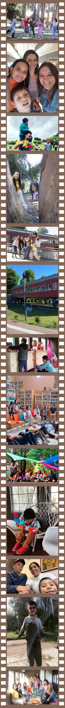
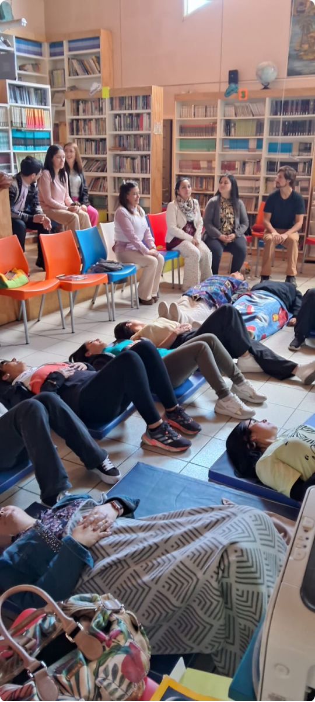

Motivos para CreSer

Desde 2020, en pandemia y con cuarentenas, iniciamos una propuesta que pone en el centro a la niñez, su felicidad y bienestar para encontrarnos en un lugar seguro, de respeto mutuo, equitativo y amoroso. La propuesta CreSer, de Fundación Entornasol (programas TEA Time), reúne a mujeres, madres y profesionales con el objetivo de crear espacios de convivencia y aprendizaje para niñas, niños y jóvenes autistas, que favorezcan el desarrollo de sus potencialidades, a la vez que brindan los apoyos necesarios para los desafíos propios de su condición. Creamos programas de pedagogía terapéutica, holísticos y a través de un paradigma ecológico. Trabajamos con la mirada en la comunidad, acompañando a niños y sus familias, desarrollando instancias para la formación y la divulgación de enfoques de vanguardia en educación y terapia.
Esta propuesta, nace en 2020 bajo el alero de Corfo a través del comité de desarrollo productivo. regional del Biobío, en la línea de Innovación Social. Actualmente es desarrollada por la Fundación Entornasol, en alianza con organizaciones y personas comprometidas con la co-construcción de un mundo que convive y se enriquece de la diversidad realzando la neurodivergencia.
Los brotes nuevos requieren nutrientes
Cuando pudimos volver a las Aulas
En un año nos desplegamos en cada espacio que nos acogió: Espacio escuela de la tierra, Bio huerta, talleres de arte y encuentro con caballos, bosque, agua y paddle sup (tabla en el agua) , cocina sensorial, juegos sensoriales, parques de juegos, canchas, biopark y espacios recreativos. Nos desplegamos alrededor del entorno que nos ofrece nuestro territorio, adaptándonos a las diversas condiciones, intereses y necesidades de apoyo generando adecuaciones. Sin embargo también hemos recibido discriminación. Como en la tierra sucede, las buenas semillas necesitan crecer en las condiciones óptimas. Con tristeza en ocasiones tuvimos que dejar espacios que no fueron aptos para convivir y cerraron sus puertas a la neurodivergencia.
Motivos para CreSer
Desde 2020, en pandemia y con cuarentenas, iniciamos una propuesta que pone en el centro a la niñez, su felicidad y bienestar para encontrarnos en un lugar seguro, de respeto mutuo, equitativo y amoroso. La propuesta CreSer, de Fundación Entornasol (programas TEA Time), reúne a mujeres, madres y profesionales con el objetivo de crear espacios de convivencia y aprendizaje para niñas, niños y jóvenes autistas, que favorezcan el desarrollo de sus potencialidades, a la vez que brindan los apoyos necesarios para los desafíos propios de su condición. Creamos programas de pedagogía terapéutica, holísticos y a través de un paradigma ecológico. Trabajamos con la mirada en la comunidad, acompañando a niños y sus familias, desarrollando instancias para la formación y la divulgación de enfoques de vanguardia en educación y terapia.
Esta propuesta, nace en 2020 bajo el alero de Corfo a través del comité de desarrollo productivo. regional del Biobío, en la línea de Innovación Social. Actualmente es desarrollada por la Fundación Entornasol, en alianza con organizaciones y personas comprometidas con la co-construcción de un mundo que convive y se enriquece de la diversidad realzando la neurodivergencia.
Los brotes nuevos requieren nutrientes
Un trabajo profundo y delicado requiere estabilidad para dar respuesta a familias que buscan mejorar la calidad de vida de sus hijos, quienes permanente requieren atención profesional. Por ello esta propuesta busca democratizar el acceso a quienes lo necesitan. Desde 2020 iniciamos, en pandemia y con cuarentenas, una propuesta que pone en el centro a la niñez. Su felicidad y bienestar, para encontrarnos en un lugar seguro, de respeto mutuo, equitativo y amoroso.
Cuando pudimos volver a las Aulas
En un año nos desplegamos en cada espacio que nos acogió: Espacio escuela de la tierra, Bio huerta, talleres de arte y encuentro con caballos, bosque, agua y paddle sup (tabla en el agua) , cocina sensorial, juegos sensoriales, parques de juegos, canchas, biopark y espacios recreativos. Nos desplegamos alrededor del entorno que nos ofrece nuestro territorio, adaptándonos a las diversas condiciones, intereses y necesidades de apoyo generando adecuaciones. Sin embargo también hemos recibido discriminación. Como en la tierra sucede, las buenas semillas necesitan crecer en las condiciones óptimas. Con tristeza en ocasiones tuvimos que dejar espacios que no fueron aptos para convivir y cerraron sus puertas a la neurodivergencia.
Misión y Visión
Misión: Brindar espacios de convivencia y aprendizaje para niñas, niños y jóvenes autistas, estimular habilidades individuales y colectivas y favorecer el desarrollo de sus potencialidades, intereses profundos, conocimientos, habilidades, actitudes y aptitudes; Acompañar hacia niveles creativos de expresión y comunicación, durante el proceso de aprendizaje en armonía con toda la comunidad. A su vez, busca asegurar los apoyos necesarios para los desafíos propios de su condición.
Visión: Motivar a la sociedad a seguir evolucionando como seres humanos; A través nuestro enfoque y metodología, contribuir y replicar en diversos entornos, espacios, organizaciones y grupos que lo requieran y valorar una verdadera convivencia neurodeversa, favorecer el desarrollo de las potencialidades y responder de manera equitativa, justa, armoniosa a las necesidades, intereses y sueños de los y las personas autistas a nivel regional, nacional y mundial.

Conoce Nuestra Historia
¿Quiénes somos?
Somos una organización sin fines de lucro, creada en diciembre de 2022, que apoya a niñas, niños y jóvenes autistas con un trabajo sostenido desde 2020. Hemos creado espacios adecuados y únicos para la infancia autista, de diferente y variadas necesidades de apoyo. Contamos con una metodología de intervención única en la región y el país, basada en pedagogía terapéutica holística, integrada al medio social y ecológico.
Entregamos a las familias un espacio de convivencia respetuoso, donde encuentran educación y terapia, de forma que las niñas y niños disfrutan la vida, jugando y explorando desde sus intereses, junto a un equipo transdisciplinario que entrega en conjunto los apoyos necesarios, a través de jornadas pedagógicas terapéuticas en el agua (Balneario Laguna Chicha de San Pedro de la Paz) y bosque (recorridos y actividades alrededor de la Laguna Grande de San Pedro de La Paz), juegos sensoriales, movimiento y artes en el Vagón de Tren ubicado en Parque Laguna Grande de San Pedro de La Paz.
Las familias que confían en nosotras, han encontrado un espacio donde sus hijos e hijas son felices y reciben sus terapias con amor en cada acción y experiencia pedagógica.
El comienzo: TEA Time
Nuestra organización nace desde la necesidad de abrir opciones para la infancia autista en edad escolar, cuando dos amigas y madres de niños autistas toman en sus manos la tarea de crear espacios donde sus hijos reciban todas las atenciones en un solo lugar. Sueñan con un espacio idóneo, adaptado a las necesidades y talentos de ellos.
Convocadas por este impulso, convergen personas y organizaciones con vocación de mejorar el mundo para la educación. Uniendo convicción y talento de profesionales de áreas de educación, salud e ingenierías. Mujeres, madres de familias neurodiversas, invitan a educadoras, terapeutas y emprendedores, desarollando una Iniciativa de Innovación Social en 2019, co-financiada por Corfo y el Comité de Desarrollo Productivo Regional: TEA Time, Tiempo de CreSer.
Este proyecto busca, aportar un espacio único para la educación y terapias de niños y niñas autistas. Abriendo el camino para crear entornos especializados, adecuados, que interactúan con su entorno social y ambiental. Ampliando la gama de opciones existentes para las familias que conviven con el autismo, y abre la brecha para las semillas de Entornasol.
Ejecutado en varias etapas, entre mayo de 2020 y abril de 2023 por la OTEC Acciona-T SpA. Y en alianza con organizaciones locales como Municipalidad de San Pedro de la Paz, Centro Cultural, otras organizaciones locales, educativas y sociales, y con la colaboración y mentoría de profesionales destacados en Chile y otros países. Junto con es desarrollo de la propuesta pedagógica desarrollamos capacitación, divulgación y asociatividad.
El Trencito
Nuestro espacio físico está emplazado en un vagón de tren frente a Parque Laguna Grande y sala sensorial en Balneario de Laguna Chica de San Pedro de la Paz, Región del Bío Bio, insertos en “aulas vivas”, el espacio abierto en entornos naturales como bosques, lagunas, parques y barrios.
Fue en el año 2020 que la Municipaidad de San Pedro de la Paz nos facilitó este icónico Trencito para desarrollar nuestro programa TEA Time con el objetivo de crear un espacio complementario para la educación y terapias de niños en edad escolar del espectro autista y neuro-diverso.
La rutina para los pequeños, separados en jornadas, va desde jugar en el vagón del trencito hasta terapia con caballos, arte lana, biohuerta, cocina sensorial, juegos en el agua y la práctica de stand up paddle.
La Fundación
Desde el inicio, en este caminar juntas en torno al sol, como madres, profesionales y personas neurodiversas, fuimos conscientes de la necesidad de conformar una organización que de sustento a nuestra propuesta y que, a la vez, promueva el desarrollo profesional, así como el intercambio entre organizaciones, permeando el mundo con la riqueza de la neurodiversidad y la convivencia.
Así fue como, en diciembre de 2022, creamos la Fundacón Entornasol, una organización sin fines de lucro, que apoya a niñas, niños y jóvenes autistas. Hemos desarrollado espacios adecuados y únicos para la infancia autista, de diferente y variadas necesidades de apoyo. Contamos con una metodología de intervención única en la región y el país, basada en pedagogía terapéutica holística, integrada al medio social y ecológico.
El equipo raíz, co-fundadoras de Entornasol, lo conforman Patricia Roa, Patricia Escobar y Magdalena Inzunza, aportando desde distintas profesiones y experiencia, inspiradas por las propias vivencias personales con el autismo y la neurodivergencia. Vamos avanzando juntas adquiriendo más comprensión y experiencia, nos une la certeza de que es urgente y necesario nutrir nuestro espacio enriquecer una comunidad de familias, permear el entorno con nuestras propuestas, visibilizando las brechas que existen para la verdadera convivencia. Nos motiva seguir abriendo espacios, aportando consciencia y co-crear espacios para que todos los niños y niñas puedan crecer felices, valorando sus diferencias, desplegando sus destrezas.
Nuestros Objetivos
- Promover creatividad e innovación en educación y terapia, aportando valor a la sociedad en su conjunto.
- Crear ambientes armónicos de conexión, meta cognición, aprendizaje y valoración de nuestras potencialidades y fortalezas humanas.
- Vincular a los niños, niñas y jóvenes autistas con sí mismo, con otros y con su entorno natural.
- Aportar al desarrollo profesional, en co-creación con organizaciones privadas y públicas.
- Aprender a conocer, aprender a ser, aprender a hacer, aprender a convivir.
Nuestros Valores
- El amor: Es importante que todo el trabajo se haga desde el amor, lo que nos permite fortalecer emociones como la empatía y la compasión (sentir con el otro).
- Crear entornos apropiados para niños y niñas espectro autista desde un modelo ecológico pedagógico, terapéutico, holístico, articulando el desarrollo emocional, cognitivo, social y ambiental.
- Comunidad: El sentirse parte de un grupo humano que comparte valores, visiones y objetivos comunes es fundamental para el trabajo dentro del programa.
- Aprendizaje: Es relevante partir de la base de que todo es un constante aprendizaje, y continuamente estamos aprendiendo de nuestros pares y de los mismos niños.
- Coherencia y Armonía: El trabajo en unidad y colaboración es fundamental, esto implica valorar al otro, tanto su trabajo como sus ideas. Se busca lograr un equilibrio, que esté presente en espacios, organización de los tiempos, etc.
- Respeto y Afecto: Cultivamos la amabilidad, brindar atención y cariño; saber escuchar y ser respetuosos de los espacios y de las preferencias de los niños.
- Expresar y comunicar libremente las emociones, sensaciones e intereses.
- Atención consciente: Una atención y escucha que parte de nosotras mismas. Hacia la preocupación de conocer a los niños, desde llamarlos por sus nombres a conocer sus historias de vida y a sus familias.
- Impecabilidad: En nuestros espacios cuidamos lo sutil. Esto incluye gestos y palabras. Cuidando la comunicación clara, y la mantención del espacio, el cual debe estar siempre limpio y organizado.

¿Quiénes somos?
Somos una organización sin fines de lucro, creada en diciembre de 2022, que apoya a niñas, niños y jóvenes autistas con un trabajo sostenido desde 2020. Hemos creado espacios adecuados y únicos para la infancia autista, de diferente y variadas necesidades de apoyo. Contamos con una metodología de intervención única en la región y el país, basada en pedagogía terapéutica holística, integrada al medio social y ecológico.
Entregamos a las familias un espacio de convivencia respetuoso, donde encuentran educación y terapia, de forma que las niñas y niños disfrutan la vida, jugando y explorando desde sus intereses, junto a un equipo transdisciplinario que entrega en conjunto los apoyos necesarios, a través de jornadas pedagógicas terapéuticas en el agua (Balneario Laguna Chicha de San Pedro de la Paz) y bosque (recorridos y actividades alrededor de la Laguna Grande de San Pedro de La Paz), juegos sensoriales, movimiento y artes en el Vagón de Tren ubicado en Parque Laguna Grande de San Pedro de La Paz.
Las familias que confían en nosotras, han encontrado un espacio donde sus hijos e hijas son felices y reciben sus terapias con amor en cada acción y experiencia pedagógica.
El comienzo: TEA Time
Nuestra organización nace desde la necesidad de abrir opciones para la infancia autista en edad escolar, cuando dos amigas y madres de niños autistas toman en sus manos la tarea de crear espacios donde sus hijos reciban todas las atenciones en un solo lugar. Sueñan con un espacio idóneo, adaptado a las necesidades y talentos de ellos.
Convocadas por este impulso, convergen personas y organizaciones con vocación de mejorar el mundo para la educación. Uniendo convicción y talento de profesionales de áreas de educación, salud e ingenierías. Mujeres, madres de familias neurodiversas, invitan a educadoras, terapeutas y emprendedores, desarollando una Iniciativa de Innovación Social en 2019, co-financiada por Corfo y el Comité de Desarrollo Productivo Regional: TEA Time, Tiempo de CreSer.
Este proyecto busca, aportar un espacio único para la educación y terapias de niños y niñas autistas. Abriendo el camino para crear entornos especializados, adecuados, que interactúan con su entorno social y ambiental. Ampliando la gama de opciones existentes para las familias que conviven con el autismo, y abre la brecha para las semillas de Entornasol.
Ejecutado en varias etapas, entre mayo de 2020 y abril de 2023 por la OTEC Acciona-T SpA. Y en alianza con organizaciones locales como Municipalidad de San Pedro de la Paz, Centro Cultural, otras organizaciones locales, educativas y sociales, y con la colaboración y mentoría de profesionales destacados en Chile y otros países. Junto con es desarrollo de la propuesta pedagógica desarrollamos capacitación, divulgación y asociatividad.
El Trencito
Nuestro espacio físico está emplazado en un vagón de tren frente a Parque Laguna Grande y sala sensorial en Balneario de Laguna Chica de San Pedro de la Paz, Región del Bío Bio, insertos en “aulas vivas”, el espacio abierto en entornos naturales como bosques, lagunas, parques y barrios.
Fue en el año 2020 que la Municipaidad de San Pedro de la Paz nos facilitó este icónico Trencito para desarrollar nuestro programa TEA Time con el objetivo de crear un espacio complementario para la educación y terapias de niños en edad escolar del espectro autista y neuro-diverso.
La rutina para los pequeños, separados en jornadas, va desde jugar en el vagón del trencito hasta terapia con caballos, arte lana, biohuerta, cocina sensorial, juegos en el agua y la práctica de stand up paddle.
La Fundación
Desde el inicio, en este caminar juntas en torno al sol, como madres, profesionales y personas neurodiversas, fuimos conscientes de la necesidad de conformar una organización que de sustento a nuestra propuesta y que, a la vez, promueva el desarrollo profesional, así como el intercambio entre organizaciones, permeando el mundo con la riqueza de la neurodiversidad y la convivencia.
Así fue como, en diciembre de 2022, creamos la Fundacón Entornasol, una organización sin fines de lucro, que apoya a niñas, niños y jóvenes autistas. Hemos desarrollado espacios adecuados y únicos para la infancia autista, de diferente y variadas necesidades de apoyo. Contamos con una metodología de intervención única en la región y el país, basada en pedagogía terapéutica holística, integrada al medio social y ecológico.
Nuestros Objetivos
- Promover creatividad e innovación en educación y terapia, aportando valor a la sociedad en su conjunto.
- Crear ambientes armónicos de conexión, meta cognición, aprendizaje y valoración de nuestras potencialidades y fortalezas humanas.
- Vincular a los niños, niñas y jóvenes autistas con sí mismo, con otros y con su entorno natural.
- Aportar al desarrollo profesional, en co-creación con organizaciones privadas y públicas.
- Aprender a conocer, aprender a ser, aprender a hacer, aprender a convivir.
Nuestro Equipo Transdisciplinario
Una creciente demanda por servicios especializados para niñas y niños con altas necesidades de apoyo que no encuentran respuestas en los espacios convencionales.
Por ello es necesario contar con un equipo humano especializado, en constante capacitación, y apoyos suficientes que acompañen las necesidades emergentes de cada niño, niña y familias que conviven con el autismo.
Coordinado por Magdalena Inzunza, educadora diferencial, junto a profesionales de la educación como Daniela Manríquez y Ximena Medina; fonoaudiología como Valentina González, Terapeutas ocupacionales, Francisca Neira y Daniela Cáceres, además de colaboraciones en diversas de áreas, que dialogan en nuestro devenir con las necesidades o intereses de nuestros niños: psicología, kinesiología, biohuerta, equinoterapia, musicoterapia, logopedagogía, diseñadores, etc.
Nuestro Equipo Transdisciplinario
Una creciente demanda por servicios especializados para niñas y niños con altas necesidades de apoyo que no encuentran respuestas en los espacios convencionales.
Por ello es necesario: contar con un equipo humano especializado (en constante capacitación) y apoyos suficientes que acompañen las necesidades emergentes de cada niño, niña y familias que conviven con el autismo.
Coordinado por Magdalena Inzunza, educadora diferencial, junto a profesionales de la educación como Daniela Manríquez y Ximena Medina; fonoaudiología como Valentina González, Terapeutas ocupacionales, Francisca Neira y Daniela Cáceres, además de colaboraciones en diversas de áreas, que dialogan en nuestro devenir con las necesidades o intereses de nuestros niños: psicología, kinesiología, biohuerta, equinoterapia, musicoterapia, logopedagogía, diseñadores, etc.
Nuestro mayor desafío es sostener y hacer crecer este equipo de talentos humanos.
Aulas para Todos y Todas
Co-creando entornos seguros y adecuados

Entornasol, es un espacio que integra un programa innovador dirigido a niños,niñas y jóvenes autistas, neurodivergentes. Dicho programa se basa en una co-creación holística y un modelo ecológico, con un enfoque de trabajo transdisciplinario de pedagogía terapéutica. Aulas flexibles y vinculación con el entorno, que tiene como foco la particularidad, los tiempos y ritmos de cada niña, niño y joven autista. Su espacio físico está emplazado en un Vagón de tren frente a parque laguna grande y sala sensorial en Balneario de laguna chica de San Pedro de la Paz. Región del Bío Bio, y aulas vivas abiertas en entornos naturales como son bosques, lagunas, parques.
Los espacios de convivencia, entornos de aprendizajes, juego e interacción, consideran ciertas condiciones mínimas que cada aula debe contemplar:
- Espacio óptimo de 25 a 30 m2 de superficie.
- Contar con luz natural e iluminación de calidad.
- Color de las paredes armónico, prefiriendo tonos pasteles, luminosos y amables.
- La temperatura debe ser idónea al ambiente (mínimo de 15°C).
- Poseer viga o estructuras para darle flexibilidad, movimiento y colgar columpios sensoriales.
- Inserto o cercano a áreas verdes, espacios de aprendizajes vivos.
- Baño con espacio y elementos para limpiar y cambiar de ropa a niños.
- Espacios adecuados para preparar, manipular alimentos.
- Sala de apoyo individual y regulación emocional.
- Elementos de seguridad.
Sigue Conociendo Más de Nosotros


¿Por qué tú nos amarás?

Compromiso con la comunidad autista
Asesoramiento y apoyo